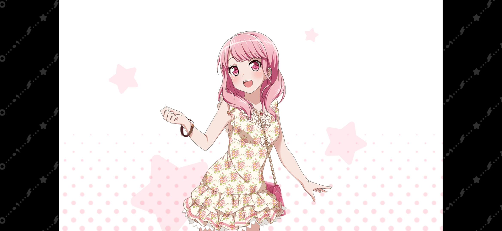
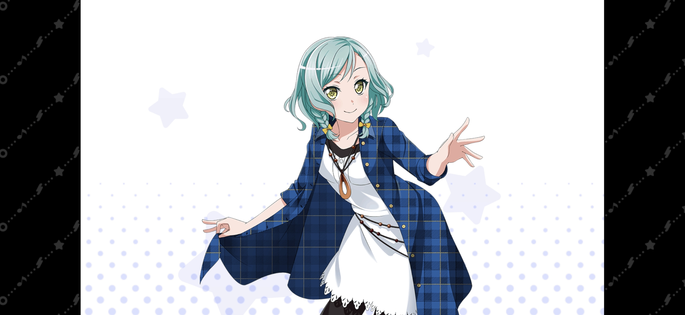
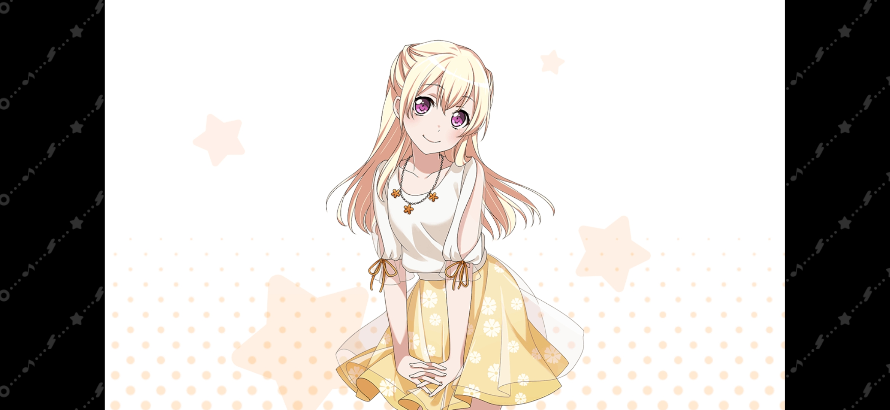
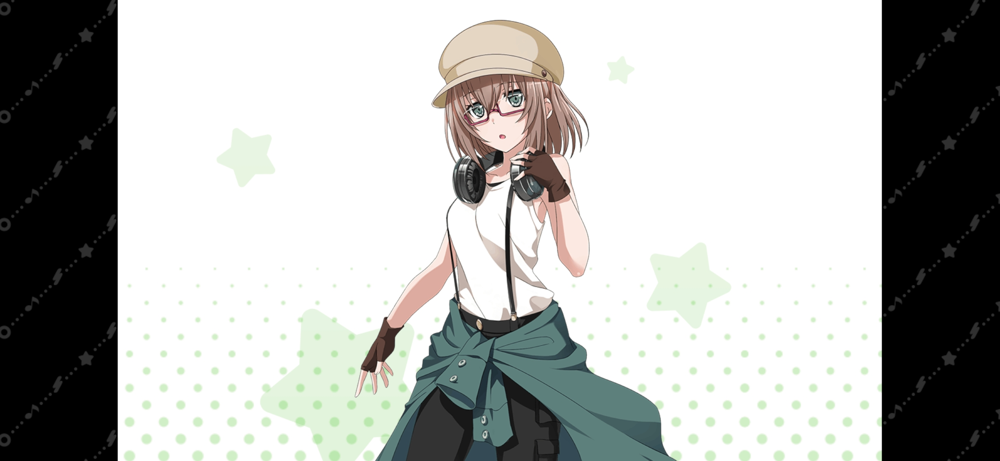
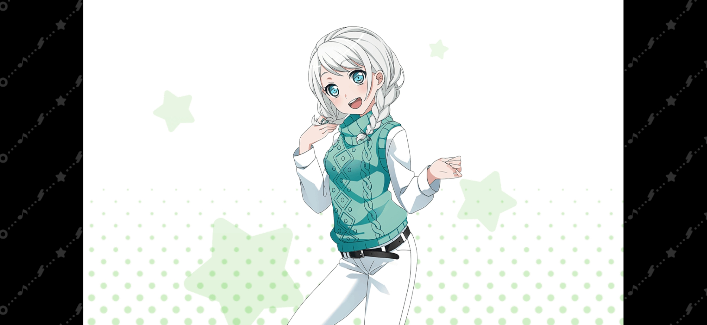

| 圖片 | 姓名 | 擔當 | 聲優 | 生日 | 身高 | 簡介 |
|---|---|---|---|---|---|---|
|  | 丸山彩 | 主唱 | 前島亞美 | 12月27日 | 156cm | Pastel*Palettes樂隊的主唱，就讀於四葉女子大學文學部。 喜歡瀏覽交友網站和研究自拍。 喜歡吃蛋包飯和漢堡肉之類的西餐，討厭吃章魚。 缺乏自信，性格容易緊張怯場還經常咬到舌頭，因此不太擅長即興發揮，對自身發展不太有利。 淚腺脆弱，只要感情湧上心頭就很容易掉眼淚。 |
|  | 冰川日菜 | 吉他手 | 小澤亞李 | 3月20日 | 156cm | Pastel*Palettes樂隊的吉他手，就讀於慶鵬女子大學人類科學部。 喜歡製作香薰精油。 喜歡各種垃圾食物，口香糖和糖果和姐姐一樣，討厭清淡的食物和胡蘿蔔。 在隔壁Roselia有個雙胞胎姐姐冰川紗夜，同為吉他手。 看過的東西能過目不忘的天才少女，因此教材、樂譜甚至千聖的台詞都能輕易記下但是無論如何都記不住地圖。 |
|  | 白鷺千聖 | 貝斯手 | 上坂菫 | 4月6日 | 152cm | Pastel*Palettes樂隊的貝斯手，就讀於四葉女子大學文學部。 喜歡在咖啡廳喝茶和逛街。 喜歡吃味道清淡的東西、巴西莓碗，飲料是紅茶，討厭納豆，也討厭吃辣的東西。 從小時候開始就是以童星身份活動的年輕女演員。 因為從小就是童星，所以很會控制場面和維持自己的形象。 有一個看起來善良，卻深不可測的微笑，雖然和人說話時語氣溫柔有禮，但卻莫名地散發著一種令人不敢接近的氣場。 |
|  | 山吹沙綾 | 鼓手 | 中上育實 | 11月3日 | 161cm | 就讀於慶鵬女子大學社會學部。 宣稱「被器材包圍的時候最幸福」的如假包換的器材宅，聊起器材的話題便會滔滔不絕（興奮）。 名字順著讀倒著讀都是大和麻彌（やまとまや）。 笑起來的時候是「呼嘿嘿（フヘヘ）」的。 除了對音響器材有興趣，另外亦對「剛剛好」的空位有興趣的怪癖，例如器材和牆之間、沙發底等的地方。 |
|  | 若宮伊芙 | 鍵盤手 | 秦佐和子 | 10月27日 | 152cm | 父親是日本人，母親是芬蘭人的混血兒。 歸國子女。為人謙順有禮，對誰都很溫柔。 使用過的樂器：KORG RK-100S、Roland Lucina AX-09。 邦邦唯一僅使用Keytar而未用過標準鍵盤的鍵盤手。 就讀花咲川女子學園。 雖然是高中生，但因為身材苗條而樣子也出眾所以被聘請做模特。 喜歡看日本時代劇，因此對「武士道」文化抱有強烈的憧憬，經常把「武士道」掛在嘴邊。 |